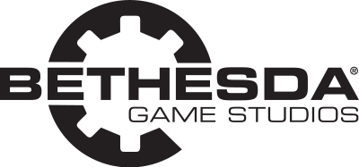

We are definitely getting Elder Scrolls 6 , but when we're getting it is currently unclear - and it looks like we won't be getting news anytime soon, either. As GamesRadar recently reported, Bethesda has said that Elder Scrolls 6 is still "years" away and the company won't reveal any news regarding the game until "years from now." While it's not surprising considering the current state of global affairs and the developer's current work on the space RPG Starfield, it's certainly a bit disheartening. Years is a long time. It's also important to note that game director Todd Howard has previously stated that Elder Scrolls 6 won't come until after Bethesda releases Starfield - if that's any unit of measurement. It's been nearly two years since the trailer dropped at E3 2018, and since then, news has been almost nonexistent. While it's all but certain that the Elder Scrolls 5: Skyrim will be a next-gen release for Xbox Series X and PS5, it's unclear when the title will drop, and if it will be available on the current platforms, as well, or just a next-gen exclusive.Not too long ago, Betehsda's parent company ZeniMax Media got into a trademark dispute trying to claim the word "Redfall." The dispute has since been settled and ZeniMax is now the proud owner of the mark. We don't know for sure that the name has anything to do with TES6 but it certainly sounds Scrolls-y doesn't it?So what is Redfall? It's not a place in Tamriel, at least that we know of. This is all speculation mind, but some folks on Reddit are theorizing that Redfall could potentially be a plague. A particular quest in Skyrim follows an affliction that causes victims to projectile vomit and develop red skin. The plague is tied to Daedric prince Peryite who owns the domains of (among other things) pestilence. Late in the quest an NPC mentions "returning to High Rock" which might suggest the plague began there. Maybe even in the city of Daggerfall. It's all just educated guesses, but Elder Scrolls lore buffs really know their stuff so it's as compelling a theory as we're likely to get for a while. All we've got to go on is this 36-second trailer Bethesda showed off back at E3 2018. It's exciting, it's got us ready for more, but we haven't got much else since then. Here you can watch the short trailer of The Elder Scrolls VI: If you click on the logo, you will be redirected to the official Bethseda homepage, where you will find additional information about "The Elder Scrolls" series and the latest news regarding updates. 